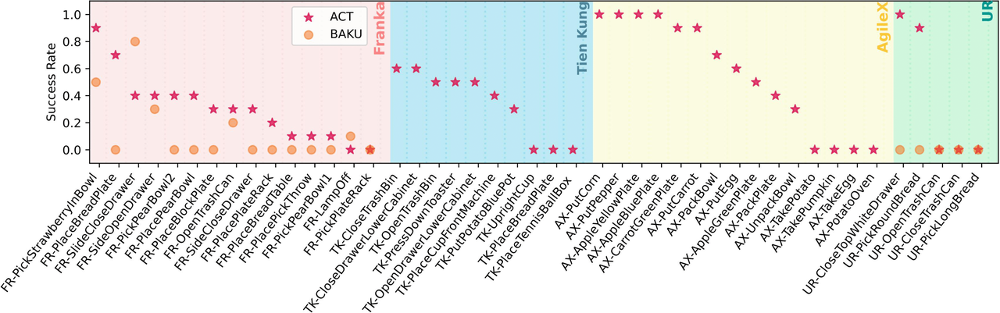

Abstract
In this paper, we introduce RoboMIND (Multi-embodiment Intelligence Normative Data for Robot manipulation), featuring 55k real-world demonstration trajectories across 279 diverse tasks involving 61 different object classes. RoboMIND is collected through human teleoperation and encompasses comprehensive robotic-related information, including multi-view RGB-D images, proprioceptive robot state information, end effector details, and linguistic task descriptions. We provide a thorough quantitative and qualitative analysis of RoboMIND across multiple dimensions, offering detailed insights into the diversity of our datasets. In our experiments, we conduct extensive real-world testing with four state-of-the-art imitation learning methods, demonstrating that training with RoboMIND data results in a high manipulation success rate and strong generalization.
Hardware Setup


For the Franka Emika Panda robots, we use cameras positioned at the top, left, and right viewpoints to record the visual information of the task trajectories. For the AgileX/Tien Kung robots, we use their built-in cameras to record visual information. For UR robots, we use an external top camera. All demonstrations are collected using high-quality human teleoperation and stored on a unified intelligence platform.
RoboMIND Data Analysis

Dataset Analysis. (a) total trajectories categorized by embodiments, (b) trajectory lengths by embodiments, (c) total trajectories grouped by task categories, and (d) total trajectories based on object usage scenarios.

Distribution of objects in RoboMIND, covering most daily life settings: domestic, industrial, kitchen, office, and retail.

Left: A histogram of skill counts across tasks for four embodiments. AgileX tasks typically involve two or three combined skills, extending the task horizon. Meanwhile, Tien Kung tasks vary in length, with some comprising up to five skills per task. Right: We visualize the AX-PutCarrot task with the AgileX robot, which involves three different skills.

language annotation Comparison to existing real-world datasets for robot manipulation. All data is drawn from the original paper or from [41]. We highlight advantages of RoboMIND in pink.
Experiment
We conduct comprehensive experiments employing four popular imitation learning methods, including ACT, BAKU, RDT-1B and OpenVLA on selected RoboMIND tasks to assess their performance and limitations.
Performance on Single Tasks
DROID (Ours)
Open-X
No Co-Train
DROID (Ours)
Open-X
No Co-Train

Single Task Results. ACT achieves an average success rate of 30.7% (Franka), 34.0% (Tien Kung), 55.3% (AgileX) and 38.0% (UR-5e).
Performance on Multi-Tasks
DROID (Ours)
Open-X
No Co-Train
DROID (Ours)
Open-X
No Co-Train
Multi-task Adaptation Results. Results demonstrate that RoboMIND can assist the VLA models in achieving generalizable control of multi-tasks.
Failure analysis
Top 5 failure reasons by embodiments. “Inaccurate Positioning” (F1) is the most frequent failure reason across all embodiments, particularly for dual-arm AgileX tasks, where it accounts for 55.6% of failures. More results and analysis can be found in our manuscript.
BibTeX
@article{park2021nerfies,
author = {Park, Keunhong and Sinha, Utkarsh and Barron, Jonathan T. and Bouaziz, Sofien and Goldman, Dan B and Seitz, Steven M. and Martin-Brualla, Ricardo},
title = {Nerfies: Deformable Neural Radiance Fields},
journal = {ICCV},
year = {2021},
}